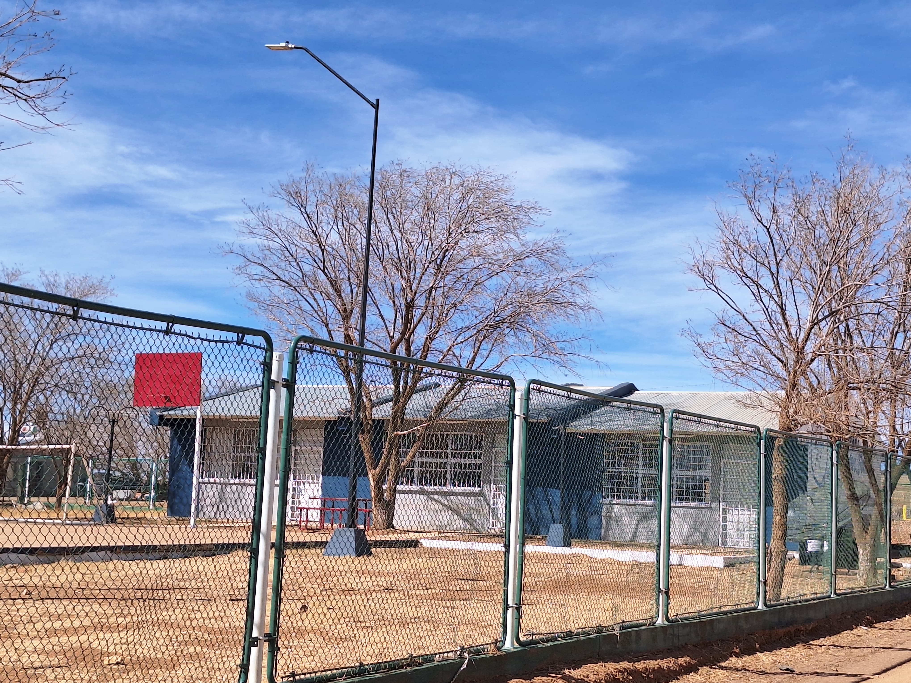

|
| EDUCACIÓN PRESCOLAR |
Pertenecí al prescolar del ejido del Jagüey, municipiode Guerrero del estado de Chihuahua. Pertenecí desde los 3 años hasta los 5 años. Fue una experiencía muy bonita en ña cual aprendí a desenvolverme como persona. Empece a desarrollar mis habilidades, como pintar, dibujar, conocer los números, las letras y aprendí a socializar. |
| Actividades que realizaba: |
 |
| EDUCACIÓN PRIMARIA |
Pertenecí a la primaria Miguel Hidalgo del ejido del Jagüey, municipio de Guerrero del estado de Chihuahua. El aprendizaje que tuve fue lo básico como, las matematicas, español,ciencias,etc,etc. |
| Actividades que realizaba: |
| EDUCACIÓN TELESECUNDARIA |
Pertenecí a la Telesecunundaria Jaime Torres Bodet del ejido del Jagüey,municipio de Guerrero del estado de Chihuahua. Aquí aprendí a exponer, a saber todo lo básico que sea necesesario para ingresar a la preparatoria. |
 |
| Actividades que realizaba: |
| CECyTECH |
CECyT 02, Guerrero, Chihuahua
Cdad. Madera, 31690 Lic. Adolfo Lopez Mateos, Chih.
Estudié en el CECyTECH en la carrera diseño gráfico digital duré 3 años y cuento con prácticas y servicio liberado. |
| DONDE SE UBICA: |
.gif) |